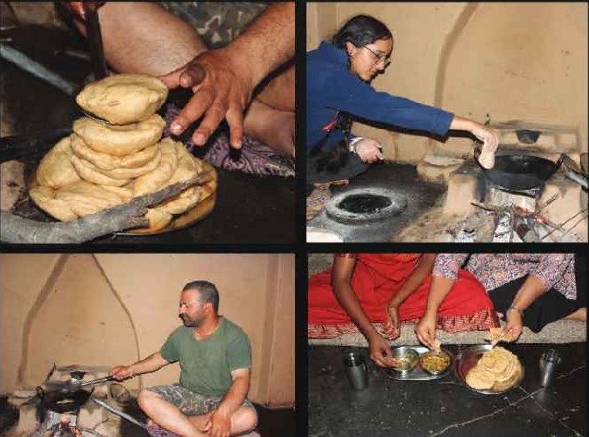

उनके नक्शे पर · 8 days, 3 valleys
The eight days of the Chamba trip
Each day leaves one Mark. The impact comes first, then what you do. Where you sleep comes last.

उनके नक्शे पर · 8 days, 3 valleys
Each day leaves one Mark. The impact comes first, then what you do. Where you sleep comes last.